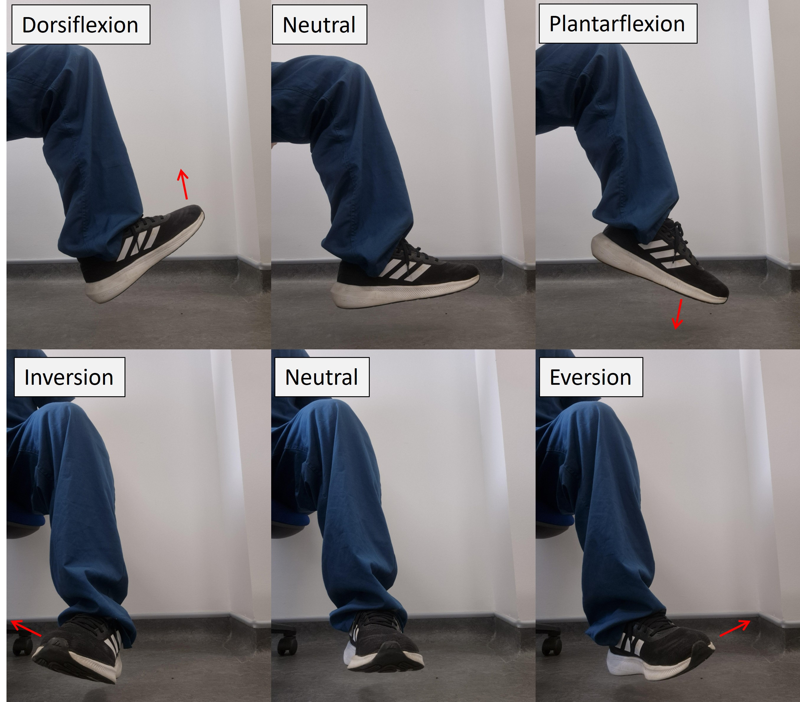
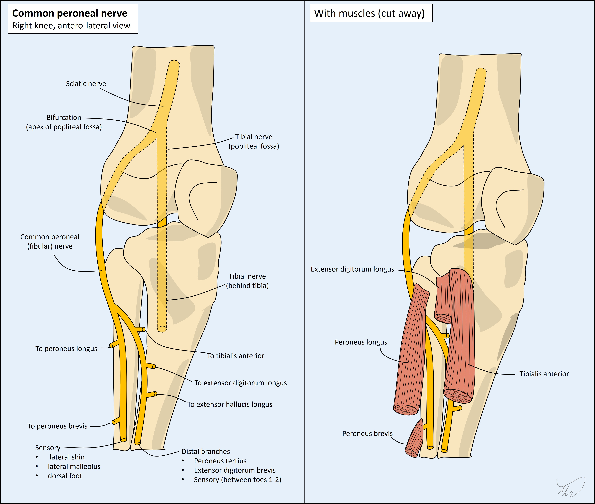

Case 12. A floppy ankle
Where is the lesion?
The problem is foot drop – dorsiflexion weakness. This has a wide differential diagnosis.
It can be seen with problems in the motor pathway from the motor homunculus down to the common peroneal nerve. Thankfully the presence or absence of other features (e.g. upper motor neuron signs, weakness in other muscles) allows it to be accurately localised using clinical features alone.
BrainDorsiflexion weakness due to a brain lesion will often be associated with broader leg weakness. This could be complete, with monoplegia (or even hemiplegia if the arm is involved), in which case all groups are weak - but with partial paralysis of the leg, the weakness is often in a pyramidal distribution – weak hip and knee flexors in addition to ankle dorsiflexion, and relatively preserved hip and knee extension and plantar flexion.
However, focused weakness in the ankle can sometimes be due to a selective lesion in the foot area of the motor homunculus (medial surface of the precentral gyrus). There will generally be upper motor neuron signs, including clonus, increased tone, and upgoing plantar response, although the former two may take some time to emerge). These are not present here. It would also be unusual for a cortical lesion affecting the foot and ankle to selectively weaken dorsiflexion without also affecting plantarflexion.
Below the cortex the motor tracts bunch together so isolated weakness around the ankle would not be typical – we would expect collateral damage to the tracts serving other body regions.
Spinal cordSimilar features would be expected in a spine lesion as in foot drop arising from a brain lesion, in particular UMN signs and pyramidal weakness, not present here, and as before it would be unusual to selectively see ankle weakness from a cord lesion.
RootsAnkle dorsiflexion is innervated by nerves arising from the L5 root. This root is vulnerable to compression from disc protrusion, and other mechanical causes, as well as other pathologies affecting the region - including infections (discitis/radiculitis), inflammatory lesions, and tumours.
With root pathology there is often radicular pain radiating down the path of the root and the nerves that emerge from it, often termed sciatica – an umbrella term that does not solely mean sciatic nerve disease, although similar can be seen with this. A better term is radicular pain as the issue is the root, not the nerve - but in practice the term is ubiquitously used.
The ankle reflex is S1-innervated, so is not affected in an L5 root lesion, unless one of two possibilities arises:
The distribution of sensory loss is in the L5 dermatome; various diagrams of dermatome maps exist in textbooks, and there are some differences – but most depict the L5 dermatome as including sensation of the antero-lateral shin and dorsal foot, but not the medial malleolus (L4), medial/posterior calf (S2), or sole of the foot (S1). In some diagrams, the sensory territory also includes an area of lateral thigh above the knee.
Two movements supplied by L5 are clinically useful when assessing a patient with foot drop: ankle inversion and hip abduction. If they are spared, an L5 problem is unlikely, and the lesion is likely lower down in the nerves.
In this case, while the foot drop and the sensory distribution could potentially implicate an L5 problem, the sparing of ankle inversion and hip abduction and the absence of pain go against this.

PlexusThe lumbosacral plexus is a complex structure fusing many roots and forming the various nerves that provide motor, sensory and autonomic function to the pelvis and lower limbs. Plexus pathology can produce pain (pelvic and also radiating to the leg), as well as sensory and motor deficits, including loss of reflexes, wasting and fasciculations. Isolated and painless foot drop without more to the picture would be unusual.
Nerves Sciatic nerveThe sciatic nerve is very large, taking root input from L4-5 and S1-3. It exits the greater sciatic foramen, passes below the piriformis muscle, and travels down the posterior thigh. It is vulnerable to damage by entrapment in the space or iatrogenic harm via poorly-placed intramuscular buttock injections, or surgical injuries - causing symptoms including sciatica-type radicular pain and sometimes deficits in the leg. It isn't impossible that this patient's weight loss and bed rest have predisposed to this as a pressure palsy. However, isolated foot drop would be unusual.
Common peroneal nerveThe sciatic nerve separates into the common peroneal nerve (CPN) - otherwise called common fibular nerve) – and the tibial nerve at the popliteal fossa behind the knee.

The CPN travels laterally and passes around the outer service of the fibular neck, where it is highly vulnerable to compressive damage – there is minimal padding between it and the bone.
The tibial nerve travels directly downwards, deep to the calf, and innervates muscles including those involved plantarflexion and ankle inversion. In contrast to the CPN, it is well-protected, so it is uncommon to see lesions in the tibial nerve, certainly from extrinsic compression.
The CPN divides into the deep and superficial branches, which innervate muscles involved in the following movements:
In contrast, the tibial nerve supplies muscles involved in ankle plantarflexion (multiple, including gastrocnemius and soleus) and inversion (tibialis posterior), and toe flexion. The ankle reflex (Achilles) is carried by the tibial nerve – CPN lesions do not affect this reflex.
The CPN nerve also supplies sensation over the following areas:
The tibial nerve provides sensation over the posterior calf and lateral foot (sural nerve), heel (medial calcaneal) and sole (plantar nerves).
SummaryIn this patient’s case, the pattern of weakness, the flaccid tone, the spared ankle reflex, and the distribution of sensory changes, all support a left CPN problem.
What is the lesion?